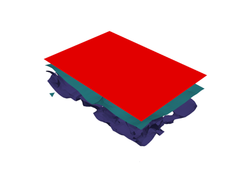
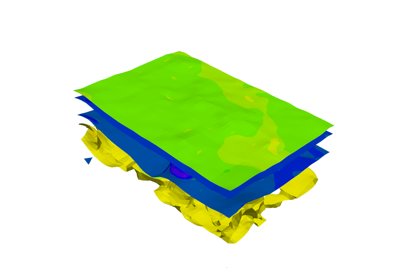
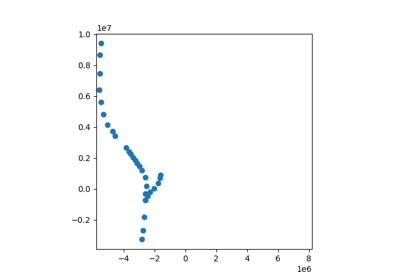

Examples#
1. Basics#



1c. Multiple groups

1c. Visualising models


2. Modelling Folds#


3. Modelling Faults#


3b. Modelling a fault network in LoopStructural
3b. Modelling a fault network in LoopStructural
3b. Modelling a fault network in LoopStructural